Box-Whisker Plots
box-whisker-plots.Rmd1. Introduction
This vignette documents and illustrates workflows for producing
box-and-whisker plots using the ospsuite.plots library.
The function for plotting box-whiskers is
plotBoxWhisker. Basic documentation of the function can be
found using: ?plotBoxWhisker. The output of the function is
a ggplot object.
1.1 Setup
This vignette uses the ospsuite.plots and tidyr libraries. We will use the default settings of ospsuite.plots (see vignette(“ospsuite.plots”, package = “ospsuite.plots”)) but will adjust the legend position and the alignment of the caption.
library(ospsuite.plots)
library(tidyr)
# Set Defaults
oldDefaults <- ospsuite.plots::setDefaults()
# Adjust default theme plot for prettier plots
theme_update(legend.position = "top")
theme_update(legend.direction = "horizontal")
theme_update(plot.caption = element_text(hjust = 1))1.2 Example Data
This vignette uses a dataset provided by the package:
pkRatioData <- exampleDataCovariates %>%
dplyr::filter(SetID == "DataSet1") %>%
dplyr::select(-c("SetID", "gsd", "AgeBin")) %>%
dplyr::mutate(Agegroup = cut(Age, breaks = c(0, 6, 12, 18, 60), include.lowest = TRUE, labels = c("infants", "school children", "adolescents", "adults")))
knitr::kable(head(pkRatioData), digits = 3, caption = "First rows of example data pkRatioData")| ID | Age | Obs | Pred | Ratio | Sex | Country | SD | Agegroup |
|---|---|---|---|---|---|---|---|---|
| 1 | 48 | 4.00 | 2.90 | 0.725 | Male | Canada | 0.693 | adults |
| 2 | 36 | 4.40 | 5.75 | 1.307 | Male | Canada | 0.188 | adults |
| 3 | 52 | 2.80 | 2.70 | 0.964 | Male | Canada | 0.984 | adults |
| 4 | 47 | 3.75 | 3.05 | 0.813 | Male | Canada | 0.591 | adults |
| 5 | 0 | 1.95 | 5.25 | 2.692 | Male | Canada | 0.443 | infants |
| 6 | 48 | 2.45 | 5.30 | 2.163 | Male | Canada | 0.072 | adults |
Metadata is a list that contains dimension and unit information for dataset columns. If available, axis labels are set by this information.
metaData <- attr(exampleDataCovariates, "metaData")
knitr::kable(metaData2DataFrame(metaData), digits = 2, caption = "List of meta data")| Age | Obs | Pred | SD | Ratio | |
|---|---|---|---|---|---|
| dimension | Age | Clearance | Clearance | Clearance | Ratio |
| unit | yrs | dL/h/kg | dL/h/kg | dL/h/kg |
2. Examples
2.1 Examples for Aggregation of Categorical Data
2.1.1 Minimal Example
Age (mapped to y) is aggregated.
plotBoxWhisker(data = pkRatioData, mapping = aes(y = Age), metaData = metaData)
#> Warning in mappedData$doAdjustmentsWithMetaData(originalmapping = mapping, : No
#> metaData available for x-axis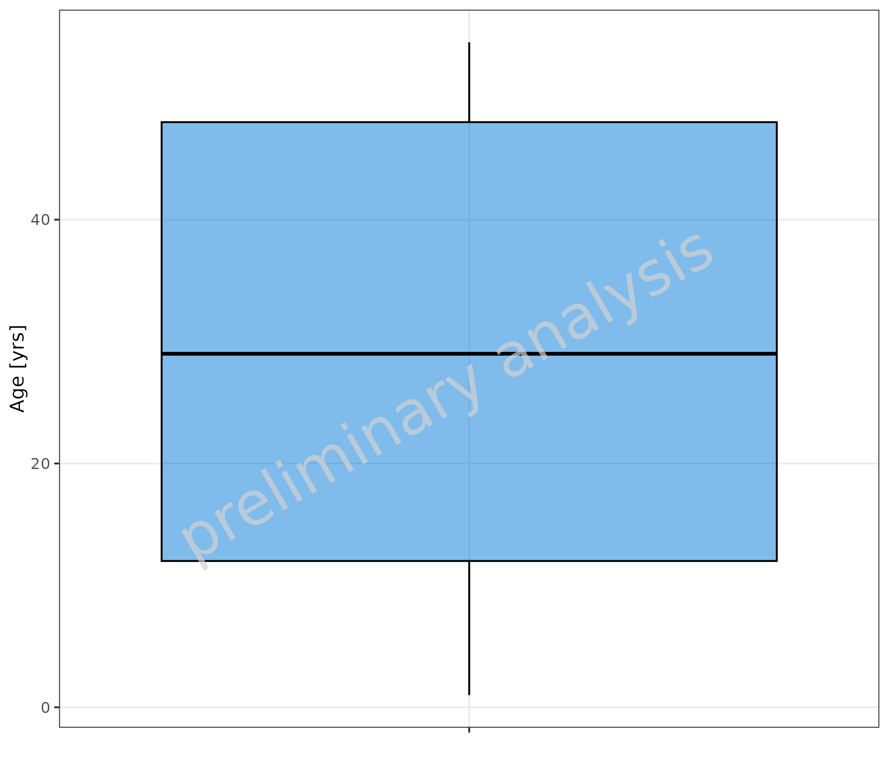
2.1.2 Stratification on X-axis
Age (mapped to y) is aggregated for different countries (mapped to x).
plotBoxWhisker(
mapping = aes(
x = Country,
y = Age
),
data = pkRatioData,
metaData = metaData
)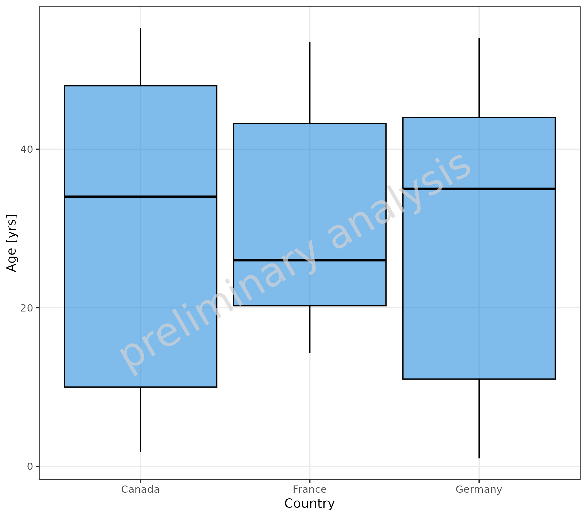
2.1.3 Stratification by Color
Age (mapped to y) is aggregated for different countries (mapped to fill).
plotBoxWhisker(
mapping = aes(
fill = Country,
y = Age
),
data = pkRatioData,
metaData = metaData
)
#> Warning in mappedData$doAdjustmentsWithMetaData(originalmapping = mapping, : No
#> metaData available for x-axis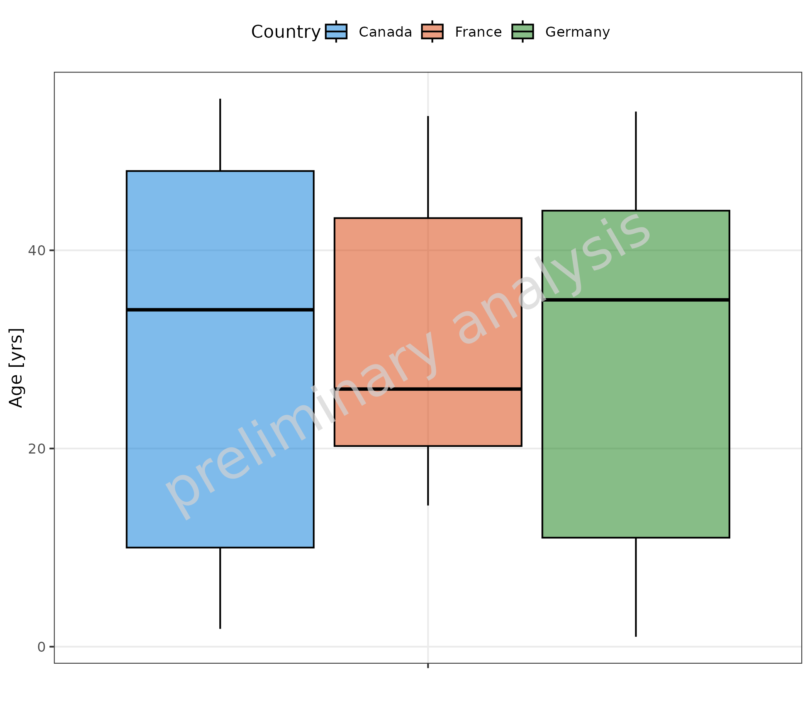
2.1.4 Stratification by Color and on X-axis
Age (mapped to y) is aggregated for different countries
(mapped to x) and Sex (mapped to groupby).
groupby is an additional aesthetic of
ospsuite.plots that works together with the variable
groupAesthetics. For the function
plotBoxWhisker(), groupAesthetics is not
settable and is fixed to fill.
plotBoxWhisker(
mapping = aes(
x = Country,
y = Age,
groupby = Sex
),
data = pkRatioData,
metaData = metaData
)
2.1.5 Stratification by Column Combination
Below, groupby is mapped to a combination of the columns
“Sex” and “Country”:
plotBoxWhisker(
mapping = aes(
y = Age,
groupby = interaction(Country, Sex, sep = "-")
),
data = pkRatioData,
metaData = metaData
) + theme(legend.title = element_blank())
#> Warning in mappedData$doAdjustmentsWithMetaData(originalmapping = mapping, : No
#> metaData available for x-axis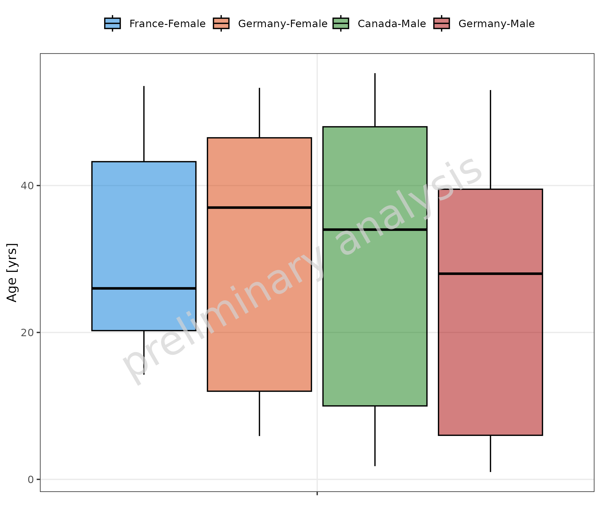
2.1.6 Omit Data Points Flagged as Missing Dependent Variable (MDV)
If some of the data should be omitted, we can do this by mapping a
logical column to the aesthetic mdv. Below, we exclude data
from Germany:
plotBoxWhisker(
mapping = aes(
x = Country,
y = Age,
mdv = Country == "Germany",
groupby = Sex
),
data = pkRatioData,
metaData = metaData
)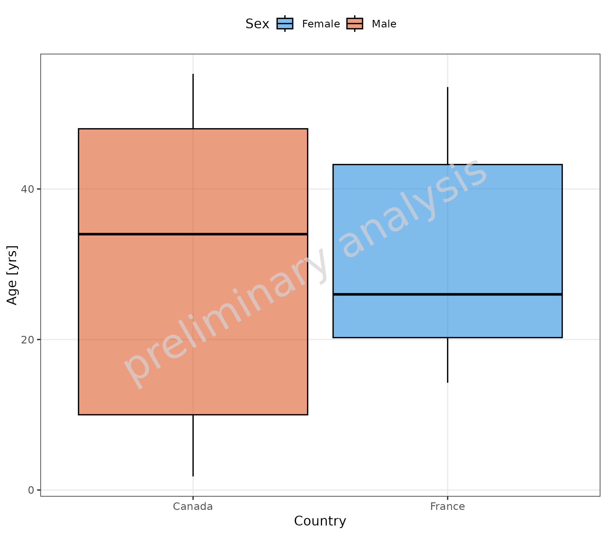
2.2 Examples for Box-Whisker vs Numeric Data
2.2.1 Numeric Data as Factor
In the next example, we added a numeric column as “mean age” of the
age group to the dataset. This column is mapped as factor to
x. The values are now displayed as categorical values
equidistant:
pkRatioData <- pkRatioData %>%
dplyr::group_by(Agegroup) %>%
dplyr::mutate(meanAge = round(mean(Age), 2))
metaData[["meanAge"]] <- metaData[["Age"]]
metaData <- metaData[intersect(names(pkRatioData), names(metaData))]
plotBoxWhisker(
data = pkRatioData,
mapping = aes(
x = as.factor(meanAge),
y = Ratio,
fill = Agegroup
),
metaData = metaData
)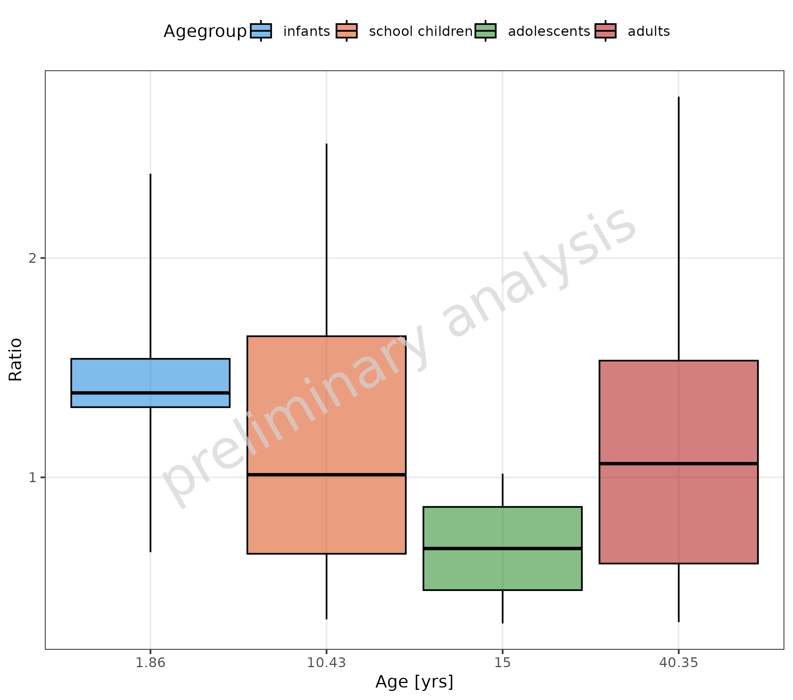
2.2.2 Numeric Data as Distinct Numeric Values
If the column mapped to x is numeric and not a factor,
the x-position of the boxes corresponds to the numeric value:
plotBoxWhisker(
mapping = aes(
x = meanAge,
y = Ratio,
fill = Agegroup
),
data = pkRatioData,
metaData = metaData
)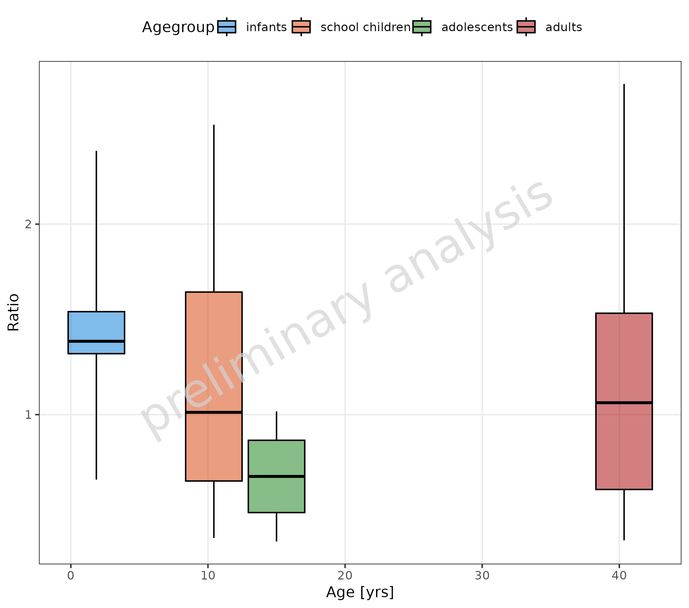
2.2.3 Map Continuous Column with Binning
By mapping x with a function, it is possible to
aggregate data of a continuous column into bins. Below, we use the
function cut to aggregate the data into 4 distinct bins
(see ?cut).
Attention: for cut(Age), no metaData
exists. So we have to set the x label manually.
plotBoxWhisker(
mapping = aes(
x = cut(Age, 4),
y = Ratio
),
data = pkRatioData,
metaData = metaData
) + labs(x = "Age range [years]")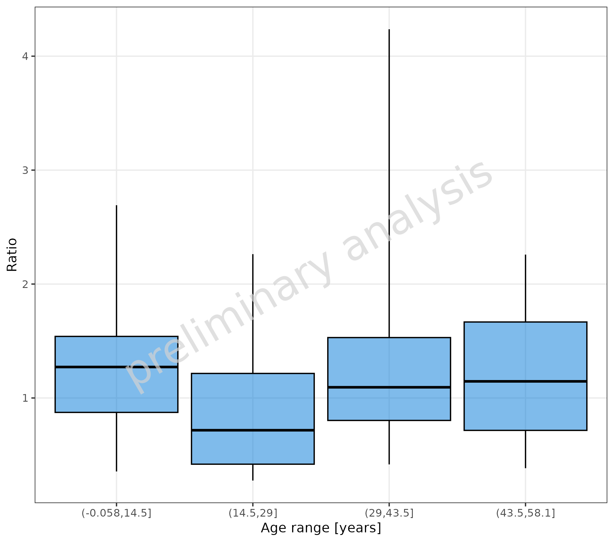
We can use any function that converts a continuous vector to a
factor. Below, we define our own cut function simply as a wrapper around
cut, with some fixed arguments. This function is then
mapped to x and groupby.
myCutfun <- function(x) {
cut(x = x, breaks = c(0, 6, 12, 18, 60), include.lowest = TRUE, labels = c("infants", "school children", "adolescents", "adults"))
}
plotBoxWhisker(
mapping = aes(
x = myCutfun(Age),
y = Ratio,
groupby = myCutfun(Age)
),
data = pkRatioData,
metaData = metaData
) +
theme(legend.title = element_blank()) +
labs(x = "")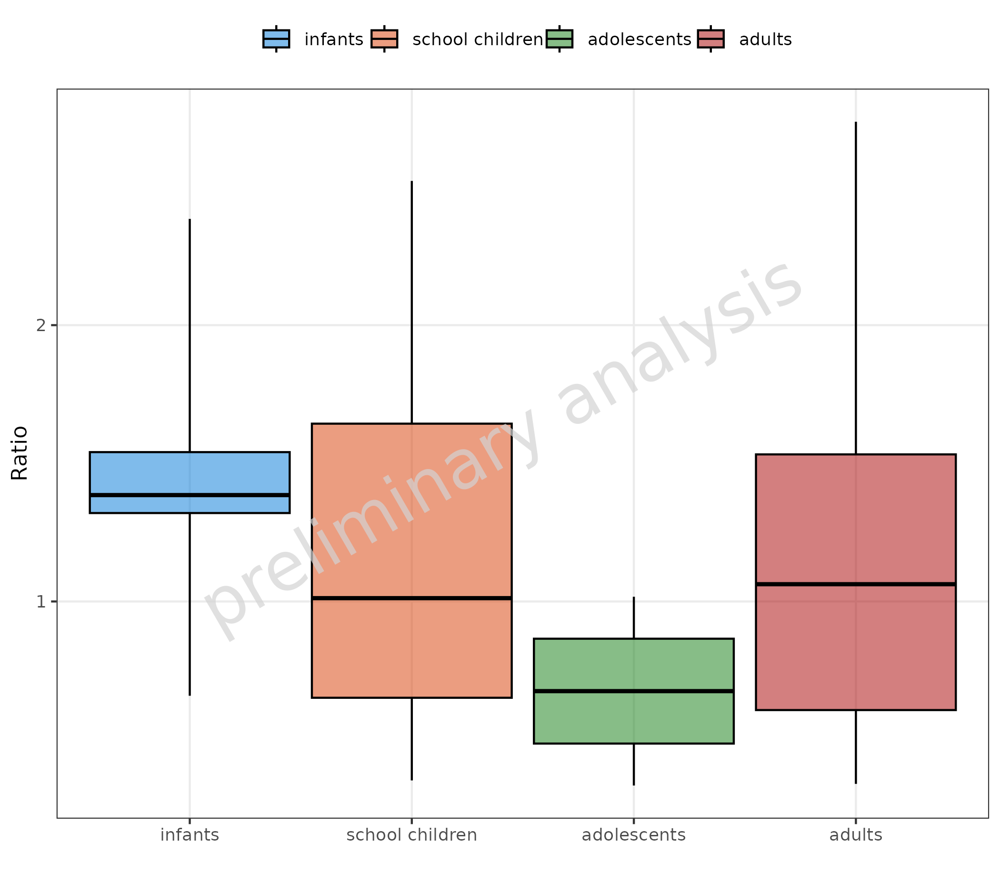
2.3 Aggregation Function
By default, the data is aggregated by percentiles defined by the
default option ospsuite.plots.Percentiles. The percentiles
can be customized for a specific plot by the input variable
percentiles or for all plots generated by
plotBoxWhisker() by changing the default options
(setOspsuite.plots.option(optionKey = OptionKeys$Percentiles, value = c(0.05, 0.25, 0.5, 0.75, 0.95))).
It is also possible to use a customized function via the input
variable statFun. If statFun is not
NULL, it will overwrite the percentiles.
Important: If you override the defaults this way, please make sure to specify this in the plot annotations, as you are essentially redefining a box plot, and the reader might misinterpret it.
2.3.1 Example for Customized Percentiles
In the example below, we do not show the whiskers by setting whisker percentiles to box percentiles.
# B No whiskers
plotBoxWhisker(
mapping = aes(
x = Country,
y = Age
),
data = pkRatioData,
metaData = metaData,
percentiles = c(0.25, 0.25, 0.5, 0.75, 0.75)
)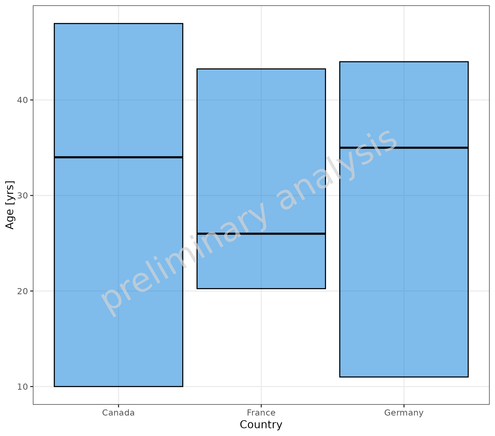
2.3.2 Example for Customized Aggregation Function
To customize the aggregation, provide a function that has as input
the vector to aggregate and as output a named list with entries
ymin, lower, middle,
upper, and ymax. In the example below, the
function myStatFun is provided, which uses mean and
standard deviation to aggregate:
myStatFun <- function(y) {
r <- list(
ymin = mean(y) - 1.96 * stats::sd(y),
lower = mean(y) - stats::sd(y),
middle = mean(y),
upper = mean(y) + stats::sd(y),
ymax = mean(y) + 1.96 * stats::sd(y)
)
return(r)
}
plotBoxWhisker(
mapping = aes(
x = Country,
y = Age
),
data = pkRatioData,
metaData = metaData,
statFun = myStatFun
) + labs(caption = "Mean for the middle line, mean +/- standard deviation for the box edges, and mean +/- 1.96 standard deviation for the whiskers.")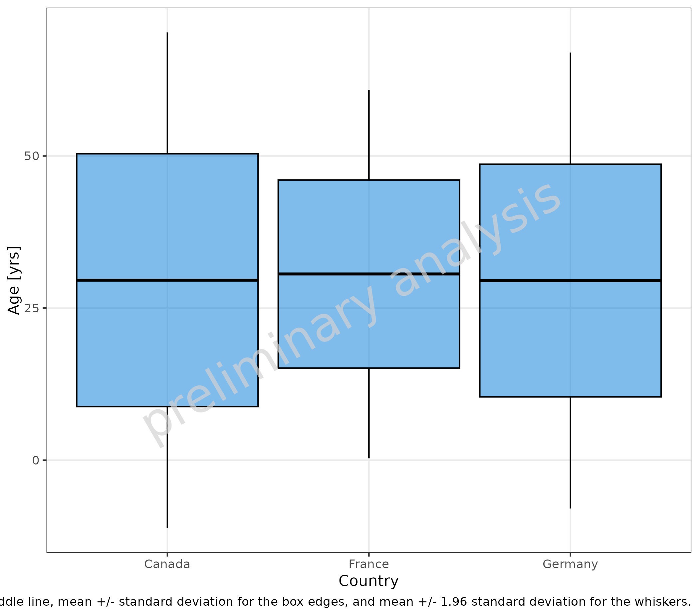
2.3.3 Tables Corresponding to Plot
As there already exist many possibilities to aggregate data in R, this package does not provide an extra function to return the aggregated data in a tabular form.
However, the plotBoxWhisker() adds the aggregation
function to the plot object. So the aggregation can be easily done,
e.g., with the data.table package using the same function
as used for the plot.
# Generate plot object
plotObject <- plotBoxWhisker(
mapping = aes(
x = Country,
y = Age,
fill = Sex
),
data = pkRatioData,
metaData = metaData
)
plot(plotObject)
# Convert data to data.table and use statFun saved in plotObject for aggregation
# Make sure to add all relevant aesthetics to "by" columns
dt <- plotObject$data %>%
data.table::setDT() %>%
.[, as.list(plotObject$statFun(Age)), by = c("Country", "Sex")]
knitr::kable(dt)| Country | Sex | N | 5th percentile | 25th percentile | 50th percentile | 75th percentile | 95th percentile | arith mean | arith standard deviation | arith CV | geo mean | geo standard deviation | geo CV |
|---|---|---|---|---|---|---|---|---|---|---|---|---|---|
| Canada | Male | 19 | 1.80 | 10.00 | 34 | 48.00 | 55.30 | 29.57895 | 20.78813 | 0.7028014 | 0.00000 | NaN | 99.85178 |
| Germany | Male | 6 | 1.00 | 6.00 | 28 | 39.50 | 53.00 | 26.00000 | 22.54773 | 0.8672203 | 10.94354 | 6.561529 | 128.19570 |
| Germany | Female | 15 | 5.90 | 12.00 | 37 | 46.50 | 53.30 | 30.93333 | 18.25794 | 0.5902351 | 22.18088 | 2.949280 | 67.91401 |
| France | Female | 10 | 14.25 | 20.25 | 26 | 43.25 | 53.55 | 30.60000 | 15.45747 | 0.5051460 | 27.27291 | 1.662613 | 42.44874 |
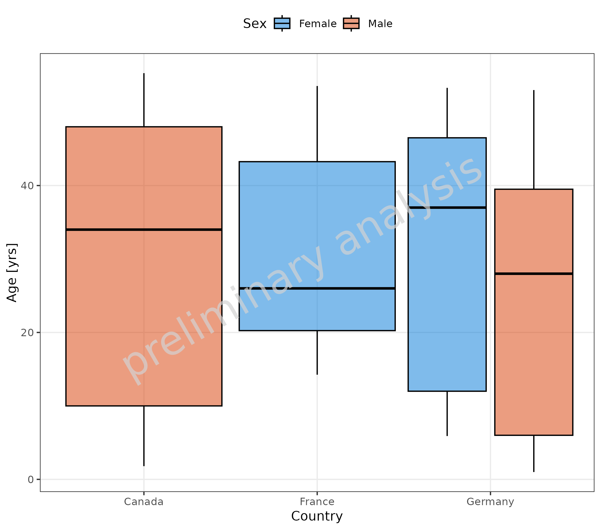
2.4 Show Outliers
2.4.1 Outliers with Default Settings
Outliers are displayed if the variable outliers is TRUE.
Default outliers are flagged when outside the range from the “25th”
percentile - 1.5 x IQR to the “75th” percentile + 1.5 x IQR.
plotBoxWhisker(
mapping = aes(
x = Sex,
y = Ratio,
fill = Country
),
data = pkRatioData,
metaData = metaData,
outliers = TRUE
) + labs(tag = "A", caption = "Default settings: Whiskers indicate 90% range (5th - 95th percentile) and outliers indicate all measurements outside 25th percentiles - 1.5 x IQR to 75th percentiles + 1.5 x IQR.")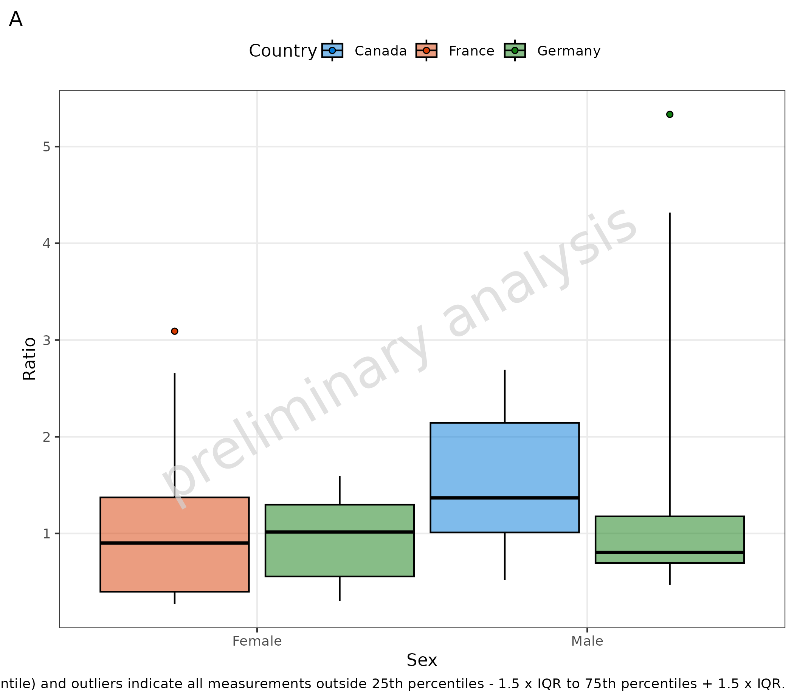
2.4.2 Outliers with Customized Settings
In the following example, the aggregation is customized to set the
whiskers to 10% and 90% via the input variable percentiles,
and the outlier range is customized to show all points outside the
whiskers. For that, we define a function myStatFunOutlier,
which has as input the vector of the values and as output the vector of
values outside the outlier range.
myStatFunOutlier <- function(y) {
q <- stats::quantile(y, probs = c(0.1, 0.9), names = FALSE, na.rm = TRUE)
yOutsideRange <- subset(y, y < q[1] | y > q[2])
if (length(yOutsideRange) < 1) {
return(as.double(NA))
} else {
return(yOutsideRange)
}
}
plotBoxWhisker(
data = pkRatioData,
metaData = metaData,
mapping = aes(
x = Sex,
y = Ratio,
fill = Country
),
outliers = TRUE,
percentiles = c(0.1, 0.25, 0.5, 0.75, 0.9),
statFunOutlier = myStatFunOutlier
) + labs(caption = "Whiskers indicate 80% range (10th - 90th percentile) and outliers indicate all measurements outside whiskers.")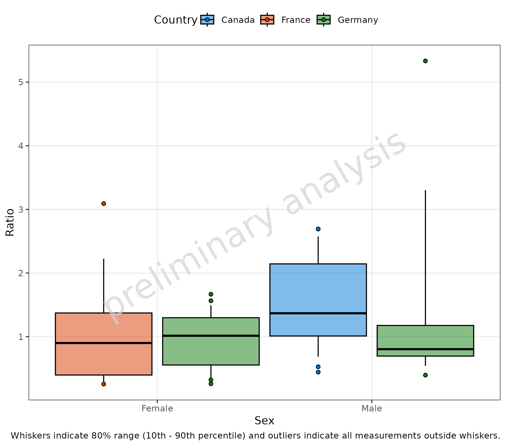
2.4.3 Retrieve Outliers as Table
The plotBoxWhisker() adds the outlier function to the
plot object. So outliers can be easily retrieved, e.g., with the
data.table package.
# Generate plotObject
plotObject <- plotBoxWhisker(
data = pkRatioData,
metaData = metaData,
mapping = aes(
x = Sex,
y = Ratio,
fill = Country
),
outliers = TRUE,
percentiles = c(0.1, 0.25, 0.5, 0.75, 0.9),
statFunOutlier = myStatFunOutlier
)
# Convert data to data.table and use statFun saved in plotObject for aggregation
# Make sure to add all relevant aesthetics to "by" columns
dt <- plotObject$data %>%
data.table::setDT() %>%
.[, .(outliers = plotObject$statFunOutlier(Ratio)), by = c("Country", "Sex")]
knitr::kable(dt)| Country | Sex | outliers |
|---|---|---|
| Canada | Male | 2.692 |
| Canada | Male | 0.443 |
| Canada | Male | 2.692 |
| Canada | Male | 0.527 |
| Germany | Male | 5.333 |
| Germany | Male | 0.396 |
| Germany | Female | 1.667 |
| Germany | Female | 1.565 |
| Germany | Female | 0.260 |
| Germany | Female | 0.321 |
| France | Female | 3.091 |
| France | Female | 0.255 |
3. Plot Configuration of Boxplots
Below you see an example of the same plot:
- A default layout
- B customized layout
- The variable
geomBoxplotAttributesnow has an entry for color ‘orange’. - The variable
geomPointAttributesnow has an entry for size = 4, color ‘orange’, and shape = ‘diamond’. - Fill is added to the mapping, so the outlier points are also colored according to ‘Sex’.
- With
scale_fill_manual, the colors for ‘Sex’ are defined.
# A default layout
plotBoxWhisker(
data = pkRatioData,
metaData = metaData,
mapping = aes(
x = Country,
y = Age,
fill = Sex
),
outliers = TRUE,
percentiles = c(0.1, 0.25, 0.5, 0.75, 0.9),
statFunOutlier = myStatFunOutlier
) + labs(tag = "A")
# B customized layout
plotBoxWhisker(
data = pkRatioData,
metaData = metaData,
mapping = aes(
x = Country,
y = Age,
fill = Sex
),
outliers = TRUE,
percentiles = c(0.1, 0.25, 0.5, 0.75, 0.9),
statFunOutlier = myStatFunOutlier,
geomBoxplotAttributes = list(color = "orange", position = position_dodge(width = 1)),
geomPointAttributes = list(position = position_dodge(width = 1), size = 4, color = "orange", shape = "diamond")
) + scale_fill_manual(values = c(Female = "pink", Male = "dodgerblue")) + labs(tag = "B")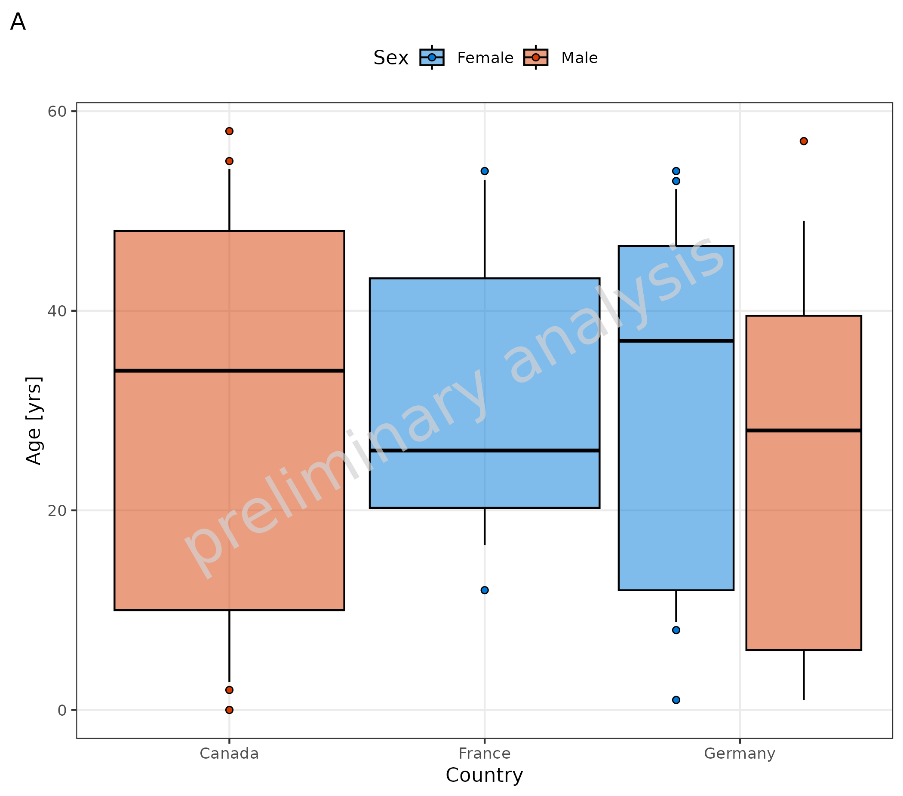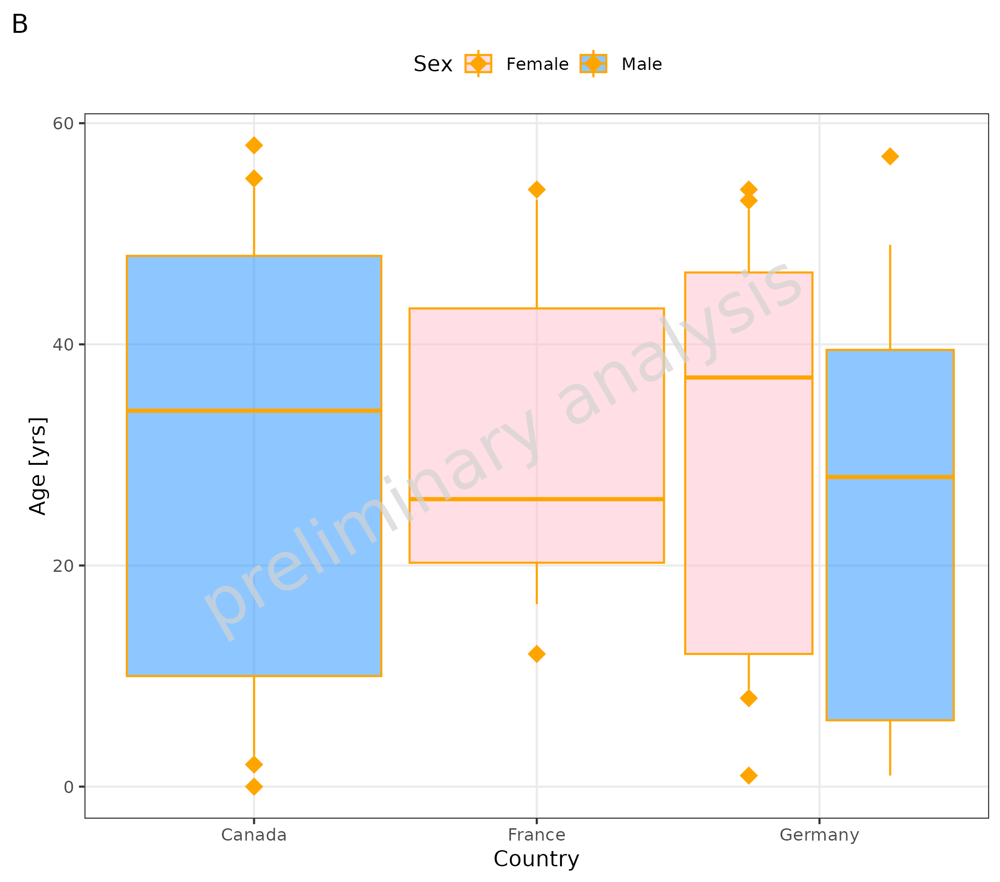